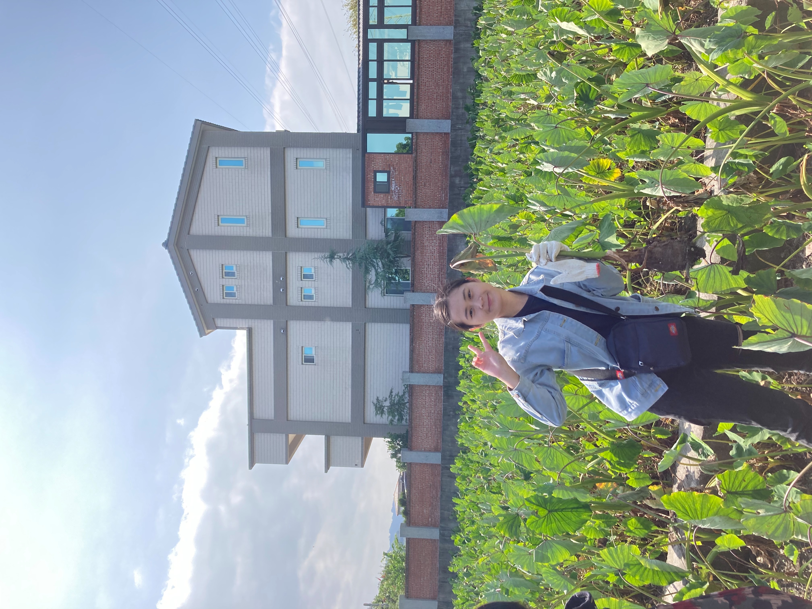
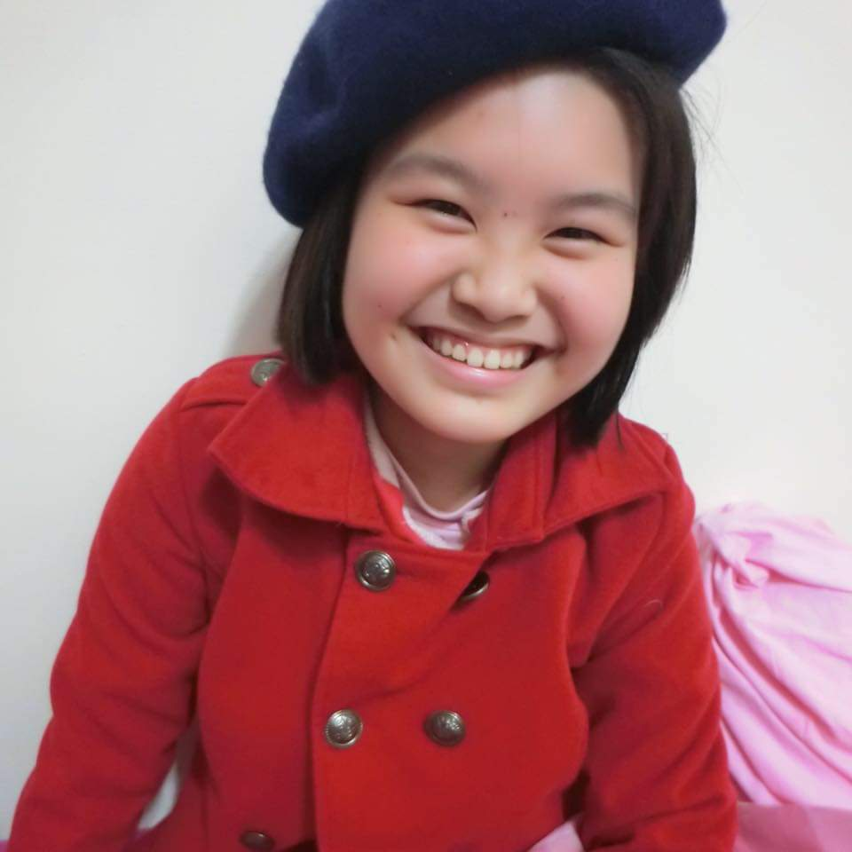

漂釀妹妹
高羽盈
Hello!我是高羽盈，瑞芳人：)
| 現職 | 聯大學生 |
|---|---|
| 學歷 | 瑞芳高工 |
| 出生地 | 新北 |
| 個人專長 | 書法 |
| 興趣 | 看綜藝節目 |
| 人格特質 | 樂觀、好相處 |
| 經歷 | 九份觀海樓打工 |
| 個人愛好 | 喜歡拍貓咪日常 |
林姿岑
我是林姿岑，生於雲林，興趣聽音樂、唱歌、追劇，專長顧小孩，個性樂觀、開朗、獨立、樂於助人。
| 現職 | 學生 |
|---|---|
| 學校 | 聯合大學 文化創意與數位行銷學系學系 |
| 出生地 | 雲林 |
| 偶像 | 張杰 |
| 興趣 | 聽音樂、追劇、唱歌 |
| 人格特質 | 孝順、謹慎、勇於冒險 |
| 實習經驗 | 超思維教育補習班打工 |
| 語言 | 英文、台語 |
何美葳

Hello!我是何美葳(⁎⁍̴̛ᴗ⁍̴̛⁎)，來自台北市
| 現職 | 學生 |
|---|---|
| 學校 | 國立聯合大學 文創系 |
| 出生地 | 台北 |
| 個人專長 | 規劃事情 |
| 興趣 | 聽音樂、彈吉他、看youtube |
| 人格特質 | 樂觀、善良 |
| 個人喜好 | 旅遊、吃美食 |
| 語言 | 中文、英文、台語 |